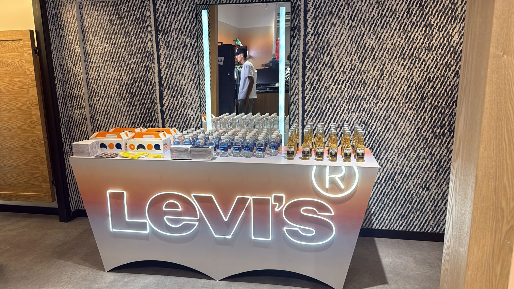

Apertura nueva tienda
Desigual Acqua
01 / Resumen ejecutivo
Lectura gerencial del evento
La apertura combinó comunicación masiva, pauta digital, presencia exterior y una experiencia de marca en tienda. El día del evento concentró el pico de tráfico y la mayor venta diaria del periodo analizado.
El evento elevó el ingreso a tienda a 442 personas, muy por encima del comportamiento de los días posteriores, y alcanzó una captación exterior del 16,5%.
Mantener la pauta y el CRM posterior, midiendo la recompra generada por el bono y diferenciando la venta orgánica de la atribuible a cada acción.
02 / Resultados obtenidos
Impacto por momento del evento
Previo: 24 al 28 de mayo · Evento: 29 de mayo · Posterior: 30 de mayo al 22 de junio de 2026.
Día del evento
Análisis neto de la jornada
La apertura fue el día de mayor venta del periodo, con $15,0M, 25 transacciones positivas y un ATV calculado de $602K. El tráfico en tienda alcanzó 442 personas.
Venta día$15,0M
ATV día$602K
Tráfico tienda442
Evolución comercial
La fecha resaltada corresponde al evento
Venta diaria antes y después
Tráfico del día
442
Personas ingresaron a la tienda durante la apertura.
16,5%captación desde el tráfico exterior
Comunicación de apertura
Free press, redes, pauta digital, CRM y espacios BTL prepararon la convocatoria antes de la apertura.
$14,5M · Promedio $2,9M/díaConversión y experiencia
Brindis, corte de cinta, desfile, catering, DJ y personal shopper concentraron tráfico y conversión.
$15,0M · 25 transaccionesSostenimiento de venta
Pauta digital, pantallas exteriores, CRM y bono de recompra continúan sosteniendo la venta.
$86,0M · Promedio $3,7M/díaIndicadores complementarios
La tienda superó el promedio de venta frente a fines de semana comparables.
Base priorizada con mejor conversión y alto potencial de recompra.
La dinámica comercial ayudó a cerrar ventas durante la jornada.
03 / Inversión
Gastos del evento
Inversión total$19,4M
Experiencia$4,9M
Comunicación$14,5M
| Categoría | Proveedor | Concepto | Gasto | Observaciones |
|---|---|---|---|---|
| Experiencia | Proveedor evento | Catering y punto de hidratación | $2,7M | Ejecutado |
| Experiencia | Producción local | Desfile y modelos | $1,1M | Ejecutado |
| Comunicación | Agencia de medios | Pauta digital y exterior | $9,3M | En curso |
04 / Acciones y dinámicas
Ejecución comercial
Invitación clientes VIP
Segmentación de clientes activos y comunicación personalizada para agendar asistencia.
Base impactada: 520Experiencia de reapertura
DJ, catering y foto cabina para generar permanencia, contenido orgánico y conversación en tienda.
86 asistentesBeneficio por compra
Regalo especial y asesoría personalizada para impulsar ATV y UPT durante la jornada.
UPT 2,1| Dinámica comercial | Mecánica | Lectura / resultado |
|---|---|---|
| Regalo por compra | Obsequio desde compra mínima | Impulso al ticket promedio |
| Bono recompra | Bono de $100.000 | Sostenimiento posterior de la venta |
Alcance digital
Resultados de pauta
Desempeño de los canales que apoyaron la convocatoria y el sostenimiento posterior.
impresiones
1.548clics
impresiones
1.461clics
05 / Evidencias fotográficas
Momentos que soportan el análisis
Experiencia
Reapertura con alto impacto visual
Ambientación de tienda y experiencia inicial para clientes invitados.

Cliente
Interacción con asistentes
Atención personalizada para impulsar conversión y recompra.

Dinámica
Activación comercial
Beneficio táctico para fortalecer ATV, UPT y cierre de venta.
06 / Decisiones
Conclusiones y próximos pasos
El evento fue rentable para el objetivo comercial y fortaleció la percepción de tienda renovada.
Realizar seguimiento a clientes asistentes durante los próximos 15 días y medir recompra.